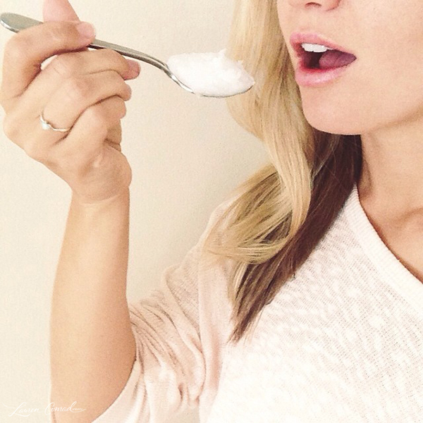

အရမ်းခေတ်စားနေတဲ့oil pulling therapy အကြောင်း..>

ကျွန်မကိုယ်တိုင်လည်း night duty တွေနဲ့ဘာနဲ့ဆိုတော့ သွားသေချာမတိုက်ဖြစ်တဲ့ရက်တွေရှိတယ် .. ဟိုရက်ကမှ youtube ကြည့်ရင်းနဲ့ ဒီ oil pulling therapy အကြောင်းကိုအရမ်းစိတ်ဝင်စားတာနဲ့ သူငယ်ချင်းသွားဆရာဝန်ကိုပဲ မေးကြည့်ဖြစ်တယ်..
– “ဆရာရဲရေ.. ခုခေတ်စားနေတဲ့ oil pulling therapy အကြောင်းမေးကြည့်ချင်လို့..
နင်သိတဲ့တိုင်းပဲ ငါက night duty ဆိုသွားမတိုက်ဖြစ်တာနဲ့ တစ်ခါတလေလည်း သွားတိုက်ပြီးကာမှ မုန့်စားဖြစ်တာနဲ့ဆိုတော့ ဒါလုပ်ရင်ရော ငါ့အတွက်အကျိုးရှိမရှိပေါ့..??”
– “oil pulling therapy ဆိုတာ ဆီနဲ့သွားရယ် ခံတွင်းရယ်ထဲက အညစ်ကြေးတွေကို ရှင်းထုတ်လိုက်တဲ့သဘောပဲ..
Oil pulling ဆိုတော့ ဆီတစ်မျိုးမျိုးကို အခြေခံပြီးလုပ်ရတာပေါ့.. ဆီဆိုတဲ့နေရာမှာ သံလွင်ဆီ၊ အုန်းဆီကြိုက်တာသုံးလို့ရတယ် ဒါပေမဲ့အုန်းဆီကတော့ပိုကောင်းတာပေါ့..
သူက ခံတွင်းတစ်ခုလုံးရယ် သွားကြားထဲမှာရှိနေတဲ့အညစ်ကြေးတွေ ဘက်တီးရီးယားတွေအားလုံးကို ဆီထဲပျော်ဝင်အောင်လုပ်ပြီး သန့်ရှင်းပေးတော့ သွားကိုက်တာတွေ သွားပိုးစားတာ ခံတွင်းနံ့ဆိုးတာတွေကို သက်သာစေတယ်လေ..
မှန်မှန်လုပ်ရင် သွားလေးတွေဖြူလာတာပေါ့..”
– “အဲ့ဆိုဒီနည်းကကောင်းတာပေါ့.. အဲ့ဒါဆို ငါ့ကို ဘယ်လိုလုပ်ရမလဲပြောပြဦး??”
– “အရင်ဆုံး ဒီနည်းက မနက်တစ်ကြိမ် ညတစ်ကြိမ်လုပ်လို့ရတယ်.. ဆီတစ်မျိုးမျိုးကို လက်ဖက်ရည်ဇွန်းတစ်ဇွန်းစာ ပါးစပ်ထဲထည့်ပြီး အာခေါင်ထဲသွားကြားထဲထိရောက်အောင် ပါးစပ်ထဲမှာလုပ်မယ် ငါတို့အာလုတ်ကျင်းရင် လုပ်သလိုပေါ့.. အဲ့ဒါမျိုးကို အနည်းဆုံး ၃ မိနစ်ကနေ ၅ မိနစ်လောက်ထိလုပ်သင့်တယ် ပြီးရင်တော့ ပလုတ်ကျင်းပြီး ပုံမှန်သွားတိုက်ရုံပဲ.. ခံတွင်းလုံးဝရှင်းသွားတာတွေ့လိမ့်မယ်.. နောက်ပြီး လျှာကိုပါတိုက်ဖို့မမေ့နဲ့နော်.. ခံတွင်းနံ့ကောင်းဖို့ဆိုရင် လျှာကိုပါတိုက်ဖို့မမေ့နဲ့..”
– “ဟုတ်ကဲ့ပါဆရာရဲရေ.. တကယ်ကျေးဇူးတင်ပါတယ်နော်..oil pulling therapy အကြောင်းကိုပြည့်ပြည့်စုံစုံရှင်းပြတာ..”
Source-Scarlette (ဆေး ၁)